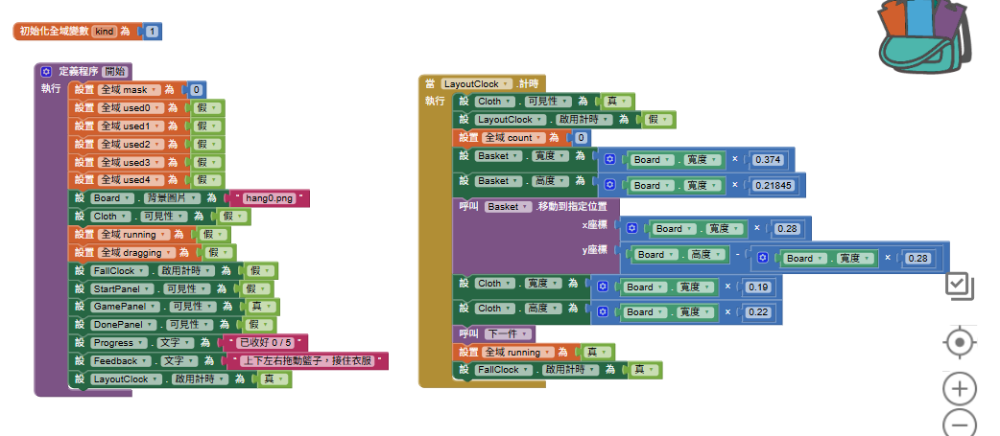
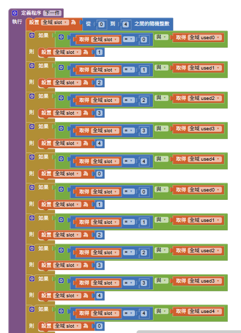
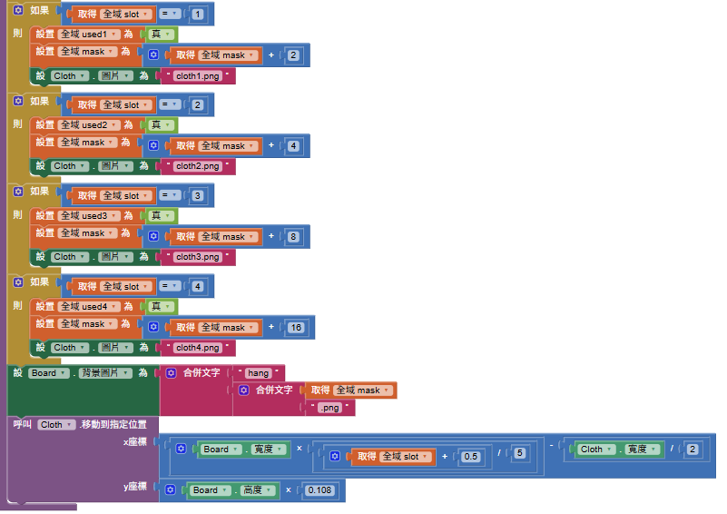
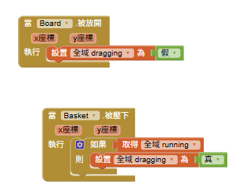
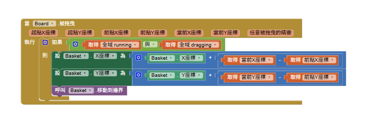
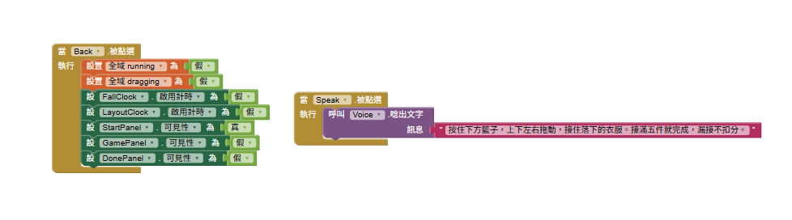

04 收衣服｜原始積木＋文字補充
開始 → 隨機選衣 → 衣架更新 → 拖籃子 → 接住／漏接 → 五件完成
清楚的區段保留原圖；過長、遮擋或未提供的區段，以文字標明來源補充。最後兩張來源內容重複，正文只使用一次。
01 開始：把五件衣物重新掛好

這段程式在做什麼？- 「開始」程序把mask設0、used0～used4設假，背景回到hang0.png；暫時隱藏下落衣物。
- running與dragging設假，停用FallClock，切到GamePanel並顯示0／5，再啟用LayoutClock。
- LayoutClock.Timer設定籃子與衣物大小、位置，count歸零，呼叫「下一件」，最後running設真並啟用FallClock。
- 此圖同時呈現開始與排版。計時器分工：LayoutClock負責排版；FallClock負責持續下落。
02 變數：是否開始、選哪件、接幾件
這段程式在做什麼？- running：遊戲是否進行；dragging：是否按住籃子。兩者都真才拖得動。
- count：實際接住數量；slot：這次選中的衣物編號0～4。
- used0～used4：各件衣物是否已被選出下落，不是是否已接住。
- mask：記錄哪些衣物已離開衣架，選擇對應背景；使用1、2、4、8、16累加。
- kind在既有教師版指引中列為宣告但未使用，不作本堂核心。
03 隨機下一件：避免重複

這段程式在做什麼？- 先隨機選slot＝0～4；如果這格used已為真，就往下一格檢查，4之後回到0。
- 圖中連續多個「如果」會依序執行，用來跳過已用位置；並非每一行都重新抽籤，也不保證剩餘衣物等機率被抽到。
- 原圖只呈現這段長程序的一部分，其餘保留在原圖連結；課堂先理解「隨機起點→跳過已用→選出未用」。此程序先提供，不要求全部重建。
04 衣架少一件：更新圖片

這段程式在做什麼？- 選定衣物後，把對應used設真，mask增加該格的權重，Cloth改成對應cloth圖片。
- 圖中可見slot1～4分別加2、4、8、16；slot0的上方被其他積木遮住，依既有教師版指引補充它的權重為1。
- Board背景由「hang」＋mask＋「.png」組成。這是更換預先準備的衣架背景，並非當場刪除圖中的衣物。
- 把Cloth移到該衣架位置下方，準備下落。used與mask在選出時更新；count要接住才增加。
05 按住、拖曳、放開籃子


這段程式在做什麼？- Basket.TouchDown：若running為真，把dragging設真。
- Board.Dragged：running且dragging才更新Basket.X、Y；位置增加量是手指當前座標減前次座標，支援上下左右移動。
- MoveIntoBounds防止籃子移出画布。Board.TouchUp把dragging設假，停止這次拖曳。
- 學生模板任務：補Board.Dragged與Board.TouchUp。先測按住籃子能動，再測放開後不再跟隨。
06 下落、接住與漏接：文字補充
這段程式在做什麼？- 本批截圖沒有FallClock.Timer，以下依既有教師版AI04_LaundryCatchV5教學指引補充，不是從截圖讀出的內容。
- 每次計時將衣物Y增加Board.Height×0.018，再判斷衣物是否進入籃子。接住後count加1，未滿五件就呼叫下一件。
- 漏接時，同一件衣物回到上方重新掉落，不另外抽新衣物，也不扣分。
- 接滿五件停止下落並顯示成果。學生修改：只調整下落係數，試玩比較快慢，其他參數先不改。
07 回首頁、語音與重玩

這段程式在做什麼？- Back停止running、dragging及兩個計時器，再切回StartPanel。這樣離開遊戲後不會繼續計時下落。
- Speak播放操作說明：按住籃子上下左右移動，接滿五件完成，漏接不扣分。
- Again呼叫開始程序。提供的重玩截圖與長程序重疊，僅以文字說明，完整原圖留存供核對。
08 課堂模板、修改與驗收
這段程式在做什麼？- 模板：LaundryStudentV1.aia。核心只補拖曳與放開兩個事件；隨機選衣及背景組合先保留。
- 先試玩觀察衣架少一件（注意）；說明生活情境與追蹤操作（關聯）；分兩次補事件並測試（信心）；展示速度修改前後（滿足）。
- 驗收：開始後才下落、籃子能上下左右移動、衣架少一件、漏接同件重來、五件接完停止、重玩恢復五件。
- 本次僅整理教學文件；没有修改.aia或重新進行手機測試。
下載學生模板
全部原始截圖
原圖1
原圖2
原圖3
原圖4
原圖5
原圖6
原圖7
原圖8